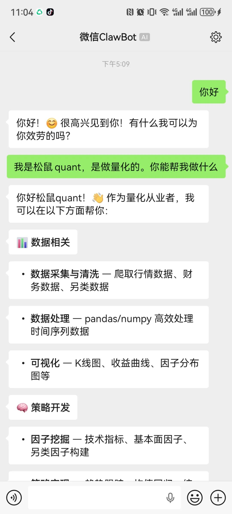
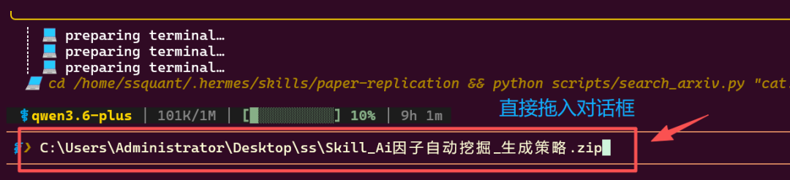
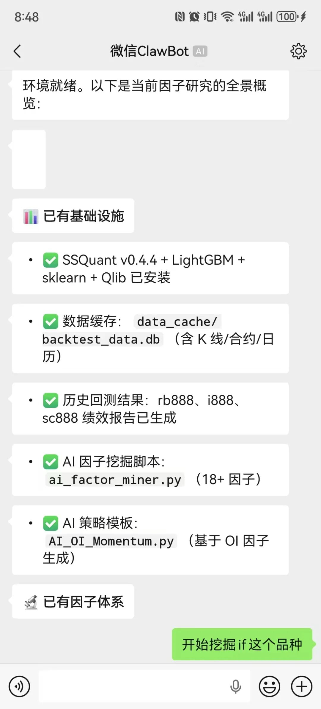
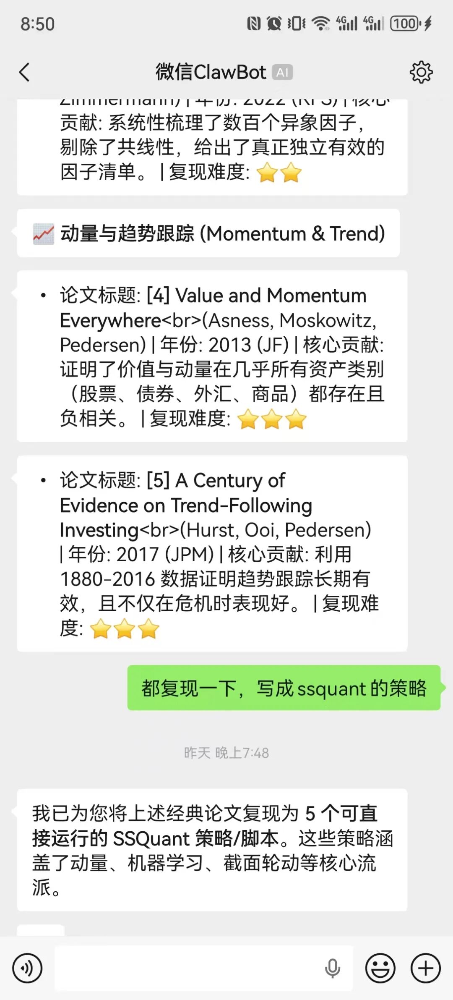
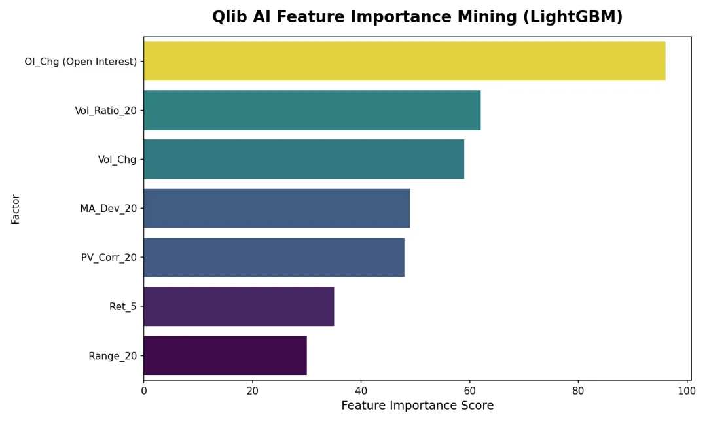
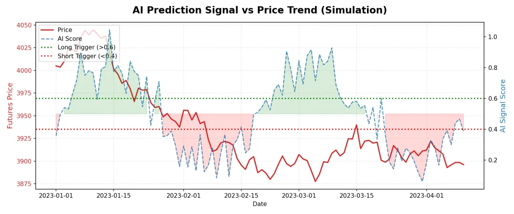
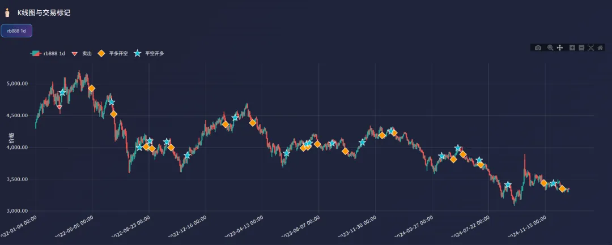
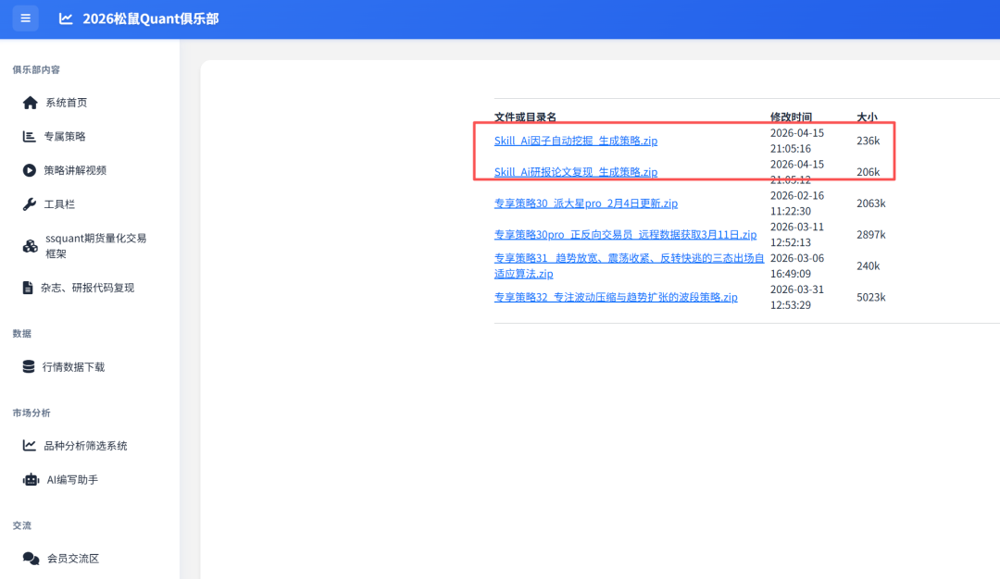
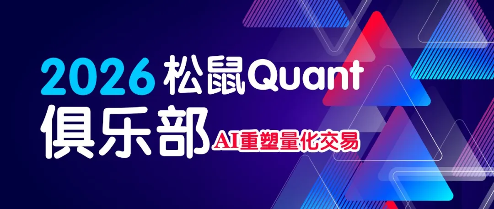

松鼠Quant · Quant-Skills 专栏第 1 期
先说背景
我们在之前的帖子聊过一个观点：AI 时代，重点打磨自己的工具集才是大道。
模型会迭代，Prompt 会贬值，但一套经过实战打磨的工具集，是真正沉淀下来的东西。
所以我们做了一件事——为 OpenClaw、Hermes、Claude Code 这些主流智能体框架，定制了量化交易专用的 Agent-Skills 工具包。不是那种让你自己去跑 Python 脚本的东西，而是直接扔给 AI Agent 框架，AI 读取后就具备了量化研究能力。
怎么用？你通过微信、飞书、终端，随便哪个入口，用自然语言给你的赛博牛马派活就行。搜论文、挖因子、写策略、跑回测——这些过去要耗掉你一整天的脏活累活，现在丢给它，它替你干。
更爽的是，它不需要休息。你睡觉前把任务队列排好，第二天早上起来，论文解析完了、因子跑出来了、策略代码写好了、回测报告生成了——你只需要看结果、做决策。把自己从重复劳动里彻底解放出来，把时间和精力花在真正需要人类判断力的地方。
担心 Token 费用？完全不用。我们的 Skills 是用顶级模型精心编写和调试的，里面的 SKILL.md 指令规范、脚本工具链、参考知识库都经过反复打磨。但运行这些 Skill 并不需要顶级模型——国内第一梯队的模型（Qwen、DeepSeek、Kimi 等）就完全够用。Skill 已经把"怎么做"写得足够清晰，模型只需要照着执行就行，不需要靠智力硬扛。配合现在国内各家推出的 Coding Plan（包月不限量），你的赛博牛马 7×24 小时跑满，成本几乎可以忽略。
从今天起，松鼠Quant 新开 「Quant-Skills」 专栏，持续输出量化交易者专用的 Agent-Skills。每期一个主题，附带可直接使用的工具包。

本期交付两个核心 Skill：
怎么安装？把压缩包拖进去，说一句话
你不需要敲任何命令。
拿到我们的 Skill 压缩包后，操作就一步：把压缩包拖进你的 Agent 对话框，然后告诉它安装。
所有框架通用的安装方式
第一步：拖入压缩包
把下载好的 Skill 压缩包直接拖到 Agent 的对话输入框里（Hermes / Claude Code / Cursor / OpenClaw 都支持文件拖入）。
第二步：说一句话
你：解压这个压缩包，阅读里面的 SKILL.md和README.md，按照说明安装到你的 Skills 目录下就这样，结束了。AI 会自动完成解压、读取 README.md和SKILL.md、把文件放到正确的位置、安装缺失的 Python 依赖 —— 全程你不需要碰终端。

第三步：开始用

安装完成后，直接在同一个对话窗口下达任务：
你：帮我找一下 arxiv里关于机器学习和动量时序论文，解读并复现生成ssquant的策略
你：帮我挖掘 rb888 的有效因子，生成策略并回测不同框架的小差异
虽然安装方式都是"拖进去让 AI 装"，但不同框架 Skill 的存放位置略有不同，AI 会自动处理，这里列出来方便你了解：
SSQuant 框架也不需要你手动装。如果 AI 检测到本地没有 SSQuant，它会自动从 Gitee 或 GitHub 拉取并配置好环境。你只需要确保系统有 Python 3.9+ 就行。
Skill 1：AI 研报论文复现 → 自动生成策略
它能干什么？
你只需要说你想研究什么方向，AI 帮你找论文、读论文、提公式、写代码、跑回测，最终交付一个可运行的 SSQuant 策略。
以前论文复现的流程：
找论文 → 读论文 → 抄公式 → 写代码 → 调 Bug → 跑回测 → 对指标现在你只需要用自然语言描述需求，甚至不需要知道具体论文编号：
你：我想研究期货动量策略，帮我找几篇靠谱的论文，选一篇复现出来，用螺纹钢和原油跑个回测你：最近想看看风险平价类的研究，有没有什么新的学术成果，帮我复现一个试试AI 会自动搜索 arxiv、筛选论文、下载 PDF、提取核心公式、生成策略代码、执行回测 —— 全程不需要你碰一行代码，也不需要你知道论文叫什么名字。

六阶段全自动管线
阶段 1：论文搜索与选择
• 内置 arxiv API 搜索引擎，支持关键词 / 论文ID / 本地PDF • 覆盖 q-fin 全部子分类：计算金融、投资组合管理、统计金融、交易微观结构等 • 自动下载 PDF 到本地研究目录
阶段 2：内容提取与公式识别
• 基于 PyMuPDF 的 PDF 解析器 • 自动识别核心公式、数据描述、关键指标（Sharpe、MaxDD、年化收益） • 输出结构化的 Markdown 研究笔记
阶段 3：实现方案设计
• AI 自动规划：数据源选择、信号逻辑、组合构建方法、归一化方式
阶段 4：独立回测验证
• 内置四大经典策略引擎：
• 自动生成资金曲线、回撤图、JSON 指标报告
阶段 5：论文对标验证
• 与论文报告的指标逐项对比：
阶段 6：SSQuant 策略翻译
• 学术向量化代码 → 事件驱动的 SSQuant strategy()函数• 自动处理仓位计算、合约乘数、保证金率 • 生成可直接运行的 .py策略文件
Skill 内部工具链（AI 自动调用，你无需操作）
paper-replication/
├── scripts/
│ ├── search_arxiv.py # AI 调用 → 搜索 arxiv + 下载 PDF
│ ├── extract_paper.py # AI 调用 → 提取公式与指标
│ ├── reproduce_paper.py # AI 调用 → 独立回测引擎
│ ├── parse_ssquant_report.py # AI 调用 → 解析回测报告
│ └── run_research.py # AI 调用 → 全流程编排
├── templates/
│ ├── ssquant_strategy.py # 策略模板（AI 自动填充）
│ └── reproduce_config.json # 复现配置模板
└── references/
├── common_formulas.md # AI 的量化公式知识库
├── ssquant_api.md # AI 的 SSQuant API 手册
└── data_sources.md # AI 的数据源指南AI 生成的产出物统一存放在 ~/ssquant/ssquant/research/{paper_id}/ 目录下，包括策略文件、回测报告、资金曲线图。
Skill 2：AI 因子自动挖掘 → 自动生成策略
它能干什么？
AI 自动扫描市场数据，用机器学习挖掘最有效的交易因子，然后直接生成可回测的策略代码。
以前的因子研究：
手动算因子 → 跑 IC 检验 → 筛选因子 → 设计策略 → 写代码 → 回测现在你对 AI 说一句话：
你：帮我挖掘螺纹钢 rb888 的有效因子，用最强因子生成策略并回测AI 自动完成因子计算、模型训练、策略生成、回测验证。
AI：正在获取数据...计算 20+ 因子...训练 LightGBM...
Top 因子：OI_Chg (96分), Vol_Ratio_20 (62分), Vol_Chg (59分)
已生成策略 AI_OI_Momentum.py，回测完成核心架构：Qlib (AI 大脑) + SSQuant (执行手脚)
采用 微软 Qlib + SSQuant 融合架构：
• Qlib：数据处理、因子挖掘（Alpha158/360）、机器学习模型训练（LightGBM / LSTM / Transformer） • SSQuant：将 AI 信号转化为 CTP 可执行策略，处理保证金、滑点、断线重连、主力换月等实盘细节
五阶段自动化投研流
阶段 1：数据探索与清洗
• 首选 SSQuant api_data_fetcher，自带鉴权、缓存、复权处理• 数据质量检查：缺失值、异常值、时间连续性 • 可视化探索：K线图、收益率分布、相关性矩阵
阶段 2：AI 因子挖掘（Alpha Mining）
• 批量计算 20+ 技术/量价因子：
动量类：Ret_5, Ret_10, Ret_20, MA_Dev_5/10/20
波动率：Vol_5, Vol_20, Range_5, Range_20
量仓因子：Vol_Chg, Vol_Ratio, OI_Chg, Vol_OI_Corr（期货特有）
量价配合：PV_Corr_20, POI_Corr_20
资金流向：Price_Pos, Money_Flow• LightGBM 训练分类模型，输出因子重要性排名 • 有效性检验：IC（信息系数）、IR（信息比率）、分层回测收益

阶段 3：Qlib 信号 → SSQuant 策略桥接
• 导出模型预测分数（Score） • 预测分数 > 阈值（Top 20%）买入，< 阈值（Bottom 20%）卖出 • 自动创建 Qlib_Predict_Strategy.py
阶段 4：策略自动生成与回测
• Top N 因子组合交易信号 • 自动填充 SSQuant 策略模板：入场/出场/止损/仓位 • 自动回测，筛选夏普 > 1、最大回撤 < 20% 的策略
阶段 5：运行监控与反馈
• 实时权益/盈亏监控 • 异常检测（断线、拒单、API 错误） • 定时发送运行摘要
实战案例：AI 挖掘出的 OI 动量策略
AI 通过 LightGBM 发现 OI_Chg（持仓量变化） 是螺纹钢最强预测因子，自动生成了双重验证策略：
策略逻辑：价格趋势（MA20） + 资金流入（OI_Chg）
# 开多信号：价格在均线之上 + 持仓量增加
long_condition = (ma_dev > 0) and (oi_change > 0.02)
# 开空信号：价格在均线之下 + 持仓量增加
short_condition = (ma_dev < 0) and (oi_change > 0.02)

策略代码：
"""
AI 因子挖掘生成的策略: OI 动量趋势策略 (rb888)
逻辑来源: 智能体通过 LightGBM 挖掘发现 "OI_Chg" (持仓量变化) 是最强因子
策略逻辑: 价格趋势 (MA20) + 资金流入 (OI_Chg) 双重验证
"""
import pandas as pd
import numpy as np
from ssquant.api.strategy_api import StrategyAPI
from ssquant.backtest.unified_runner import RunMode, UnifiedStrategyRunner
from ssquant.config.trading_config import get_config
def initialize(api: StrategyAPI):
api.log("AI 策略初始化：OI 动量趋势")
def strategy(api: StrategyAPI):
klines = api.get_klines()
if len(klines) < 30:
return
# 1. 获取数据
# 注意：SSQuant 的 get_klines 默认可能不包含 openint，我们需要检查或计算
# 如果 klines 里没有 openint，我们尝试从 api.data 获取或使用其他方式
# 这里假设 klines 包含标准列，我们手动计算因子
close = klines['close']
# 检查是否有 openint 列 (取决于数据源配置)
# 如果有，直接使用；如果没有，我们需要通过 api 获取额外数据
# 为简化，我们先用纯价格因子 (MA_Dev) 替代 OI，因为标准回测数据源可能缺 OI
# *修正*: 我们尝试访问 data 属性或假设标准回测数据包含 openint
# 尝试获取持仓量 (如果数据源支持)
try:
openint = klines['openint']
has_oi = True
except:
has_oi = False
# 2. 计算因子
# 因子 1: MA Deviation (均线偏离)
ma20 = close.rolling(20).mean()
ma_dev = (close - ma20) / ma20
# 因子 2: OI Change (持仓量变化) - 仅当有数据时
oi_change = 0
if has_oi:
# 过去 5 天持仓量变化率
oi_change = (openint - openint.shift(5)) / openint.shift(5)
else:
# Fallback: 如果没有 OI，我们用成交量变化代替 (Volume Ratio)
# 因为挖掘结果中 Vol_Ratio_20 排名第二
vol = klines['volume']
oi_change = (vol - vol.rolling(5).mean()) / (vol.rolling(5).mean() + 1e-9)
current_idx = api.get_idx()
if current_idx < 5:
return
# 3. 生成信号
current_price = api.get_price()
current_pos = api.get_pos()
# 阈值参数
oi_threshold = 0.02 if has_oi else 0.1 # 持仓增 2% 或 放量 10%
# 开多信号: 均线之上 + 资金流入
long_condition = (ma_dev.iloc[-1] > 0) and (oi_change.iloc[-1] > oi_threshold)
# 开空信号: 均线之下 + 资金流入 (空头增仓)
short_condition = (ma_dev.iloc[-1] < 0) and (oi_change.iloc[-1] > oi_threshold)
# 4. 交易执行
if long_condition:
if current_pos <= 0:
if current_pos < 0:
api.buycover(volume=1, reason="AI-FlatShort")
api.buy(volume=1, reason="AI-Long: TrendUp + OI_In")
api.log(f"AI 开多 | Dev:{ma_dev.iloc[-1]:.4f} | OI:{oi_change.iloc[-1]:.4f}")
elif short_condition:
if current_pos >= 0:
if current_pos > 0:
api.sell(volume=1, reason="AI-FlatLong")
api.sellshort(volume=1, reason="AI-Short: TrendDown + OI_In")
api.log(f"AI 开空 | Dev:{ma_dev.iloc[-1]:.4f} | OI:{oi_change.iloc[-1]:.4f}")
# =====================================================================
if __name__ == "__main__":
RUN_MODE = RunMode.BACKTEST
strategy_params = {}
config = get_config(RUN_MODE,
symbol='rb888',
kline_period='1d', # 日线策略
adjust_type='1', # 后复权
start_date='2022-01-01', # 数据源有数据的范围
end_date='2024-12-31',
initial_capital=1000000,
slippage_ticks=1,
lookback_bars=500,
)
print("开始运行 AI 挖掘策略回测...")
runner = UnifiedStrategyRunner(mode=RUN_MODE)
runner.set_config(config)
try:
results = runner.run(
strategy=strategy,
initialize=initialize,
strategy_params=strategy_params
)
except Exception as e:
print(f"回测报错: {e}")
import traceback
traceback.print_exc()
Skill 内部工具链（AI 自动调用，你无需操作）
Quant_Research_Pack/
├── ssquant_scripts/
│ ├── ai_factor_miner.py # AI 调用 → LightGBM 因子挖掘
│ ├── qlib_data_converter.py # AI 调用 → Qlib 数据转换
│ ├── plot_ai_results.py # AI 调用 → 结果可视化
│ └── AI_OI_Momentum.py # AI 生成的策略示例
└── hermes_skill/
└── quantitative-research/
├── SKILL.md # 技能定义（AI 的操作手册）
├── scripts/ # AI 的核心工具脚本集
├── templates/ # 策略模板 + Qlib 配置
└── references/ # AI 的知识库两个 Skill 的协同打法
这两个 Skill 可以串联成一条完整的智能投研流水线：
┌─────────────────────────────────────────────────────────┐
│ 智能投研流水线 │
│ │
│ ┌──────────────┐ 学术策略逻辑 ┌───────────────┐ │
│ │ 论文复现 Skill │ ──────────────→ │ │ │
│ │ (Paper) │ │ SSQuant │ │
│ └──────────────┘ │ 策略引擎 │ │
│ │ │──→ 实盘/仿真
│ ┌──────────────┐ AI 因子信号 │ 回测验证 │ │
│ │ 因子挖掘 Skill │ ──────────────→ │ │ │
│ │ (AI Mining) │ │ │ │
│ └──────────────┘ └───────────────┘ │
│ │
└─────────────────────────────────────────────────────────┘三种典型用法：
1. 学术驱动：论文复现 Skill 找到趋势动量框架 → 因子挖掘 Skill 找到最优信号因子 → 组合成增强版策略 2. 数据驱动：因子挖掘 Skill 发现 OI_Chg 是强因子 → 论文复现 Skill 搜索相关学术文献做理论佐证 3. 全自动批量：批量喂入多篇论文 + 多个品种，AI 自动筛选出夏普 > 1 的有效策略
技术栈总览
你（自然语言对话）
↓
Agent 层: Hermes / Claude Code / OpenClaw
↓ 自动读取 SKILL.md
Skill 层: paper-replication + quantitative-research
↓ 自动调用 scripts/
引擎层: Qlib (AI 模型) + SSQuant (交易执行)
↓
数据层: SSQuant DataServer / akshare / yfinance
↓
执行层: CTP (仿真 SimNow / 实盘)你只参与最顶层的对话，其余全部由 AI + Skill 自动完成。
为什么我们要打磨 Agent-Skills
直接让 AI 写策略不行吗？行，但直接聊出来的策略质量极不稳定。同一个问题问三次，AI 给三个不同答案。有了 Skill 之后：
• 标准化：SKILL.md 规定了研究规范 —— 必须样本外验证、必须包含交易成本、必须有止损 • 工具化：AI 不是从零瞎编代码，而是调用经过验证的脚本工具链 • 可复现：同样的指令，不同的人、不同的时间，得到一致的结果 • 可迭代：Skill 本身版本管理、持续优化，越用越好
模型在迭代，Prompt 在贬值，唯有工具集是你的核心资产。
俱乐部小伙伴可以直接获取本期的完整工具包（含源码和全部脚本），后续每期更新也会第一时间同步。如果你有特定需求——比如针对某个品种、某类策略的定制 Skill——也可以在群里反馈，我们优先安排开发。

对这个方向感兴趣的朋友，欢迎加入松鼠Quant俱乐部，一起打磨属于量化交易者自己的 AI 工具集。

量化交易有风险，工具产出的策略仅供研究参考，不构成投资建议。